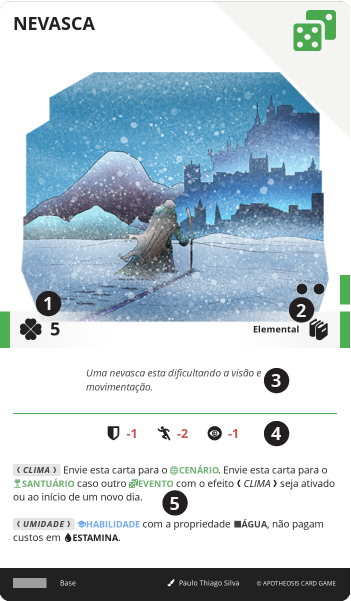

#
EVENTO
São cartas que representam acontecimentos e situações ocorrendo durante o jogo, como um encontro ou mudança súbita de clima. Em essência, são aquelas situações aleatórias que podem ocorrer no dia a dia de todos, sejam positivas ou negativas, e muitas vezes, imprevisíveis.
São cartas utilizadas para criar eventos aleatórios, que podem ser aplicados ao grupo. Elas são utilizadas para criar situações inesperadas, que podem alterar o rumo da aventura ou trazer desafios adicionais.

#
Ativar
Um evento é geralmente ativado quando o grupo está viajando ou diretamente do INVENTÁRIO pelo Herói.
Para ser ativado pelo Herói, o evento deve estar em seu INVENTÁRIO e o Herói deve ter o CONHECIMENTO e nível da carta. A descrição e efeito do EVENTO são então lidos em voz alta, que por final, é aplicado a todos os Heróis naquele momento e local.
Alguns EVENTO podem requerer em seu efeito que devem ser enviados para o CENÁRIO, geralmente determinando por quanto tempo, neste caso, os bônus e efeitos passivos da carta são aplicados continuamente enquanto ela permanecer no CENÁRIO, bem como qualquer efeito listado que determine como pode ser utilizado.
See also
São montes de cartas colocadas de face para baixo ( ocultas) e disponíveis para todos os jogadores conforme as regras do jogo.
Campanhas são modos de jogo que envolvem uma narrativa contínua, onde os jogadores participam de uma série de aventuras interconectadas.
Assim como está no nome, as cartas são a base do jogo de APOTHEOSIS, personages e eventos são construídos a partir delas.
O CENÁRIO é uma área onde são colocadas cartas que estão em jogo e seus efeitos devem ser considerados, mas não são cartas dos jogadores e seus...
Representa um personagem que auxilia o herói em sua jornada.
Um Herói é todo e qualquer personagem que possua uma MESA de cartas e um INVENTÁRIO.
É onde o Herói armazena cartas que não estão ativas ou em uso, mas que ainda são de sua posse. Ele é tratado de forma diferente da
O Mestre de Jogos é uma forma de “ inteligência artificial” que supervisiona, narra e administra a partida.
A viagem é um mode de jogo utilizado quando o grupo se desloca de um local no mapa da região, para um outro local distante, seja por meio de...